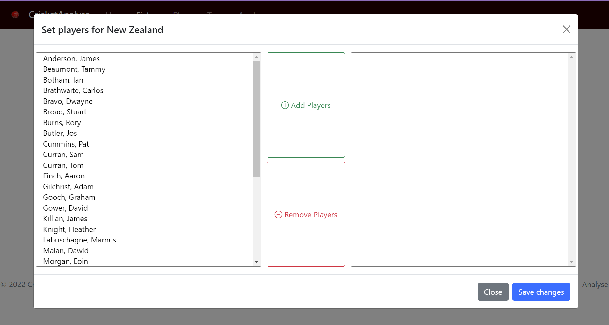
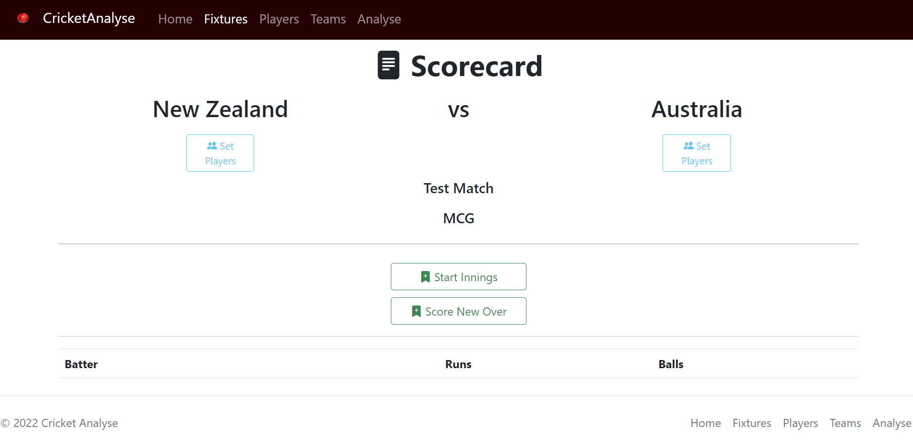
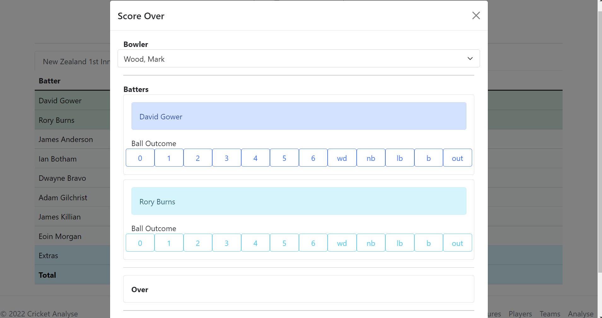

During my second year, I took on my most complex Web Design task during my Web Development module where we were tasked to create a website using HTML, CSS and JavaScript making use of either a relational or non-relational database. As I have a keen interest in cricket I thought a great way to complete this task would be to create a website which allows you to track cricket scores and players stats throughout a season. I used complex databases and JavaScript to make this possible.
In order to complete this task I used Bootstrap for my formatting as it allowed me to encompass many different designs and styles to make my website look as professional as possible. I then used databases with callback methods and repositories to gather and store the information that the user was putting into my system. These can then be displayed in the scorecard section and stored locally in the browser.



I used bootstrap Modals in order to create the pop ups which allowed users to enter the scores for each over and to add new fixtures into the calendar. This is the most complex website I have created thus far with the calls to the database and cycles that the data must undertake being very complex. I had to overcome many hurdles including that of the data overwriting itself and/or not saving appropriately due to the order that the code was executing in.